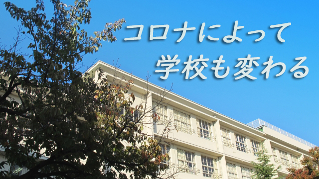

昨日、やはり緊急事態宣言の期間が延長になりましたね。自粛は続くわけです。学校の再開の目途も立たず不安な思いを抱える親や生徒も多いことでしょう。でも徒らに悲観せず、今やれることに集中しましょう。
こんなとき自宅にこもってテレビやネットのニュースばかり観ていると悲観的情報ばかりに身をさらすことになります。それはかえって身心の疲弊をもたらしかねません。
私たちは生きなければいけない。恐れてばかりでは心が病み、心が病めば肉体の生命力も衰える。できる限りの防衛策をとった上で今やるべきことをやり、来たるべき復活の日に備えましょう。
そして出来れば私たちの生きる意味について考えを巡らせてみましょう。アウシュビッツ収容所から生還したフランクル（ユダヤ系米国人―心理学者）は、その著書「夜と霧」の中で「どんな最悪の状況下でも生きる意味を見い出した者だけが生き残った」と言っています。
明けない夜はない。止まない嵐もないのです。
夜が明け嵐が止んだとき私たちはそこで何をしたいのか、誰と会いどんな人生を送りたいのか。そこでどんな「生きる意味」を見い出すのかしばし考えてみましょう。
日頃、日常に紛れて見失いがちだった自分の人生の意味や目的をこの機会にじっくり考えてみたい。それは恐らく私たちの生命力を強化するひとつの手立てとなるのではないでしょうか。
今回の動画がヒントになれば幸いです。